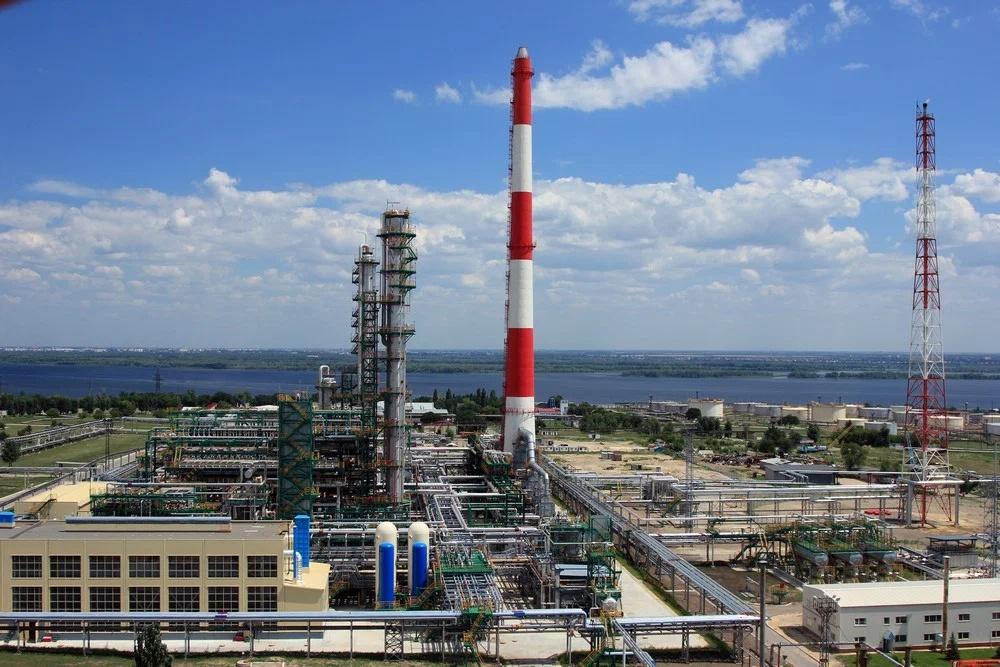
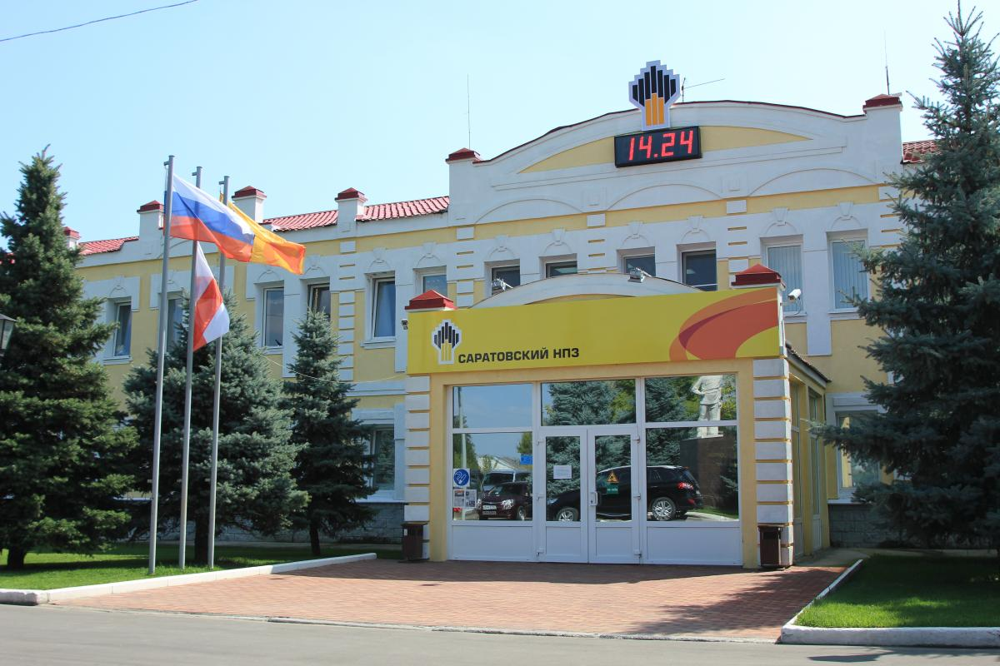
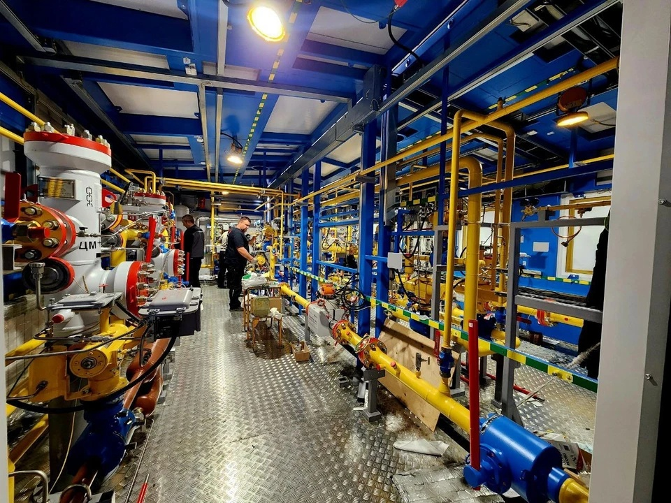

Саратовский нефтеперерабатывающий завод
ПАО «Саратовский НПЗ», Тикер: KRKN, г. Саратов
Общие сведения
| Полное название | Публичное акционерное общество «Саратовский нефтеперерабатывающий завод» |
| Год основания | 1934 |
| Расположение | Россия, г. Саратов, ул. Брянская, 1 |
| Акционер | ПАО «НК «Роснефть» |
| Мощность переработки | около 7 млн тонн нефти в год |
| Биржевой тикер | KRKN (Московская биржа) |
| Официальный сайт | www.rosneft.ru |
Направления деятельности
Саратовский НПЗ - одно из старейших нефтеперерабатывающих предприятий России. Завод специализируется на глубокой переработке нефти и производстве широкого ассортимента нефтепродуктов, соответствующих современным экологическим стандартам.
Топлива
Автомобильные бензины класса «Евро-5», дизельное топливо, авиационный керосин.
Нефтехимия
Производство сырья для нефтехимической промышленности: битум, мазут, нафта.
Масла
Базовые масла и компоненты смазочных материалов для промышленности.
Экология
Программы снижения выбросов, модернизация очистных сооружений.

Вид на завод с высоты птичьего полёта

Общий вид на завод

Саратовский НПЗ внутри
История компании
История Саратовского нефтеперерабатывающего завода насчитывает более 90 лет. За это время предприятие прошло путь от небольшого регионального завода до крупного современного нефтеперерабатывающего комплекса, входящего в структуру одной из крупнейших нефтяных компаний мира - ПАО «НК «Роснефть».
Компания сегодня
Сегодня Саратовский НПЗ - современное высокотехнологичное предприятие, оснащённое передовым оборудованием. Завод перерабатывает около 7 миллионов тонн нефти в год и производит широкий спектр нефтепродуктов: бензины, дизельное топливо, авиационный керосин, топочный мазут, битум и другие.
Предприятие является градообразующим для Саратова: на заводе работают тысячи жителей города и области. Завод уделяет большое внимание охране окружающей среды и социальным программам поддержки сотрудников и региона.
В рамках стратегии развития ПАО «НК «Роснефть» на заводе продолжается реализация инвестиционных проектов, направленных на увеличение глубины переработки нефти, повышение выхода светлых нефтепродуктов и снижение экологической нагрузки на окружающую среду.
Акции предприятия торгуются на Московской бирже под тикером KRKN.
Ключевые показатели деятельности
| Объём переработки нефти (2024 г.) | 6,8 млн тонн |
| Глубина переработки | 84,5% (плановый показатель 2025 г. - 87%) |
| Количество сотрудников | более 2 500 человек |
| Ассортимент продукции | свыше 20 наименований нефтепродуктов |
| Инвестиции в модернизацию (2018–2024) | более 35 млрд рублей |
Основатели и руководители
Основатель
Иосиф Виссарионович Сталин - именно по его решению в 1934 году началось строительство Саратовского нефтеперерабатывающего завода в рамках второй пятилетки.
Первый директор
Алексей Иванович Шашин (1934–1937) - возглавлял строительство и запуск завода.
Генеральный директор (наст. время)
Игорь Анатольевич Колесников - руководит предприятием с 2018 года.
Награды и достижения
Продукция завода
Автомобильные бензины
АИ-92, АИ-95, АИ-98 класса Евро-5.
Дизельное топливо
Летнее, зимнее, арктическое сортов Евро-5.
Авиационный керосин
Марки ТС-1, РТ для реактивных двигателей.
Битумы
Дорожные, строительные, кровельные, полимерно-битумные вяжущие.
Мазут
Топочный мазут марок М-40, М-100.
Социальная ответственность
Саратовский НПЗ реализует масштабные социальные программы:
- Ежегодная поддержка детских садов, школ и больниц г. Саратова и области
- Стипендии студентам профильных вузов (СГТУ, СГУ)
- Программа «Молодой специалист» для выпускников
- Санаторно-курортное лечение сотрудников
- Строительство спортивных площадок и ремонт дворовых территорий
Экологическая политика
Завод реализует природоохранные проекты в рамках стратегии «Роснефть-2030»:
- Реконструкция очистных сооружений (инвестиции более 4 млрд руб.)
- Установка систем автоматического мониторинга выбросов
- Программа «Зелёный щит» - высадка более 50 000 деревьев
- Переход на замкнутый цикл водоснабжения (снижение забора воды на 30%)
- Ежегодная акция «День Волги» по очистке берега реки
Перспективы развития
До 2028 года Саратовский НПЗ планирует:
- Запуск комплекса «Глубокая переработка нефти» (КГПН) мощностью 2 млн тонн в год
- Увеличение глубины переработки до 92%
- Выход на производство базовых масел API Group II/III
- Снижение выбросов загрязняющих веществ на 25%
- Создание технопарка для импортозамещения нефтехимического оборудования